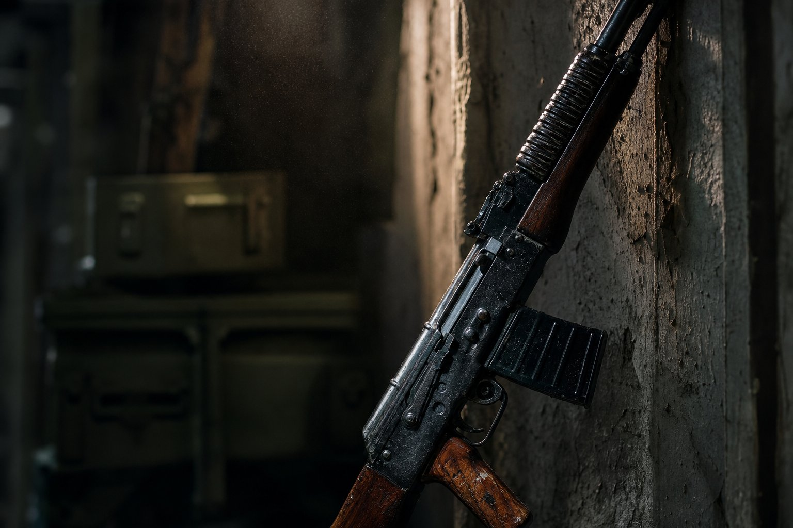
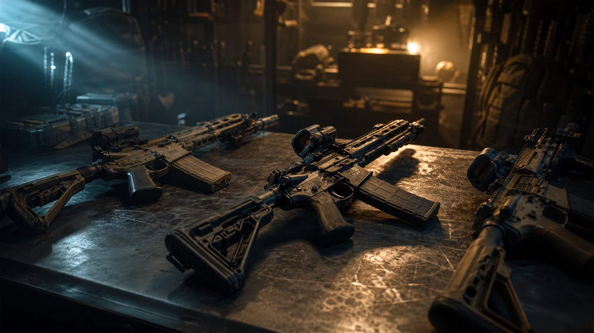

1. Rôle dans le meta S7
Les fusils d'assaut dominent le meta S7 : portée utile 10–60 m, flexibilité totale. Le podium : A545 (nouveau apex S7, 900 RPM, comparable U191/H416), H416 (800 RPM, recul quasi nul), U191 (750 RPM, premium), AK-12 (700 RPM, le laser budget). En budget : AK-15SC pour le close-to-mid firepower.
2. Conseils de jeu
- Munitions d'abord : en S7, la RNG de pénétration T5/T6 a disparu — la bonne mun gagne presque toujours. Tier 3 minimum, Tier 4-5 pour les modes haut de gamme.
- Caps par mode : Normal = T4 max, Lockdown = T5 max, Forbidden = T6. Adaptez votre kit au lobby, pas à votre ego.
- A545 : montez BS/PP-class pour percer le T5/T6 ; c'est la réponse à presque tous les lobbies.
- H416 : légère nerf S7 mais inchangé en S-tier — le meilleur coût/efficacité du jeu.
- FAL : avec le Burst Kit S7, il renaît en build stable haute puissance low-RPM.
À retenir
Le H416 « tout-en-un » à 400 000 K n'est pas la seule réponse : un AK-12 à 240 000 K avec mun T4 écrase la plupart des lobbies Normal/Lockdown.
Meta complet
Croisez ces analyses avec la Tier List S7 complète et nos builds recommandés (A545 900 RPM, AK-12 laser budget, M24 oneshot).
3. Les règles qui dictent le fusil d'assaut
Le fusil d'assaut est l'arme qui gagne les fights que personne ne voulait gagner. Fourchette de portée 30-100 m, c'est la classe la plus polyvalente du jeu : elle tient face à un SMG qui pousse, elle tient face à un DMR qui tient la distance, et elle ne perd jamais toute une partie parce qu'un seul projeté l'a touchée.
- Plafonds par mode : Normal = T4 maximum, Lockdown = T5 maximum, Forbidden = T6. Le choix du mode décide de votre tier avant même votre budget.
- Plafond de valeur : 900 000 K d'équipement en Lockdown. Au-delà, le raid refuse de démarrer.
- RNG de pénétration supprimée : depuis la S7, la bonne munition traverse presque toujours. comptez sur votre munition, pas sur la chance.
- TTK allongé, headshots récompensés : la précision compte davantage qu'en S6. Le premier tir placé vaut plus qu'une rafale.
Trois techniques de tir qui changent tout en S7
L'AN-94 : la manuelle en mode automatique
C'est une mécanique du jeu, pas une préférence : ne passez pas le sélecteur en mode rafale à 3 balles. Laissez l'arme en automatique et travaillez votre déclenchement semi-automatique manuel — le tap rapide. Le mécanisme regroupe alors les deux premières balles de chaque tape presque parfaitement au même point.
Concrètement : avec la même ammunition 5,45 que l'A545 et l'AK-12, un AN-94 joué en taps peut fendre une plaque de niveau 5 avant que l'adversaire ne réagisse au bruit. C'est l'arme la moins chère du lot à rendre un résultat de niveau 5.
Source : conseil communautaire, S7. Donnée communautaire.
L'A545 : viser les jambes, pas le torse
L'A545 tire très vite, et c'est sa puissance de feu qui fait le travail. Mais en 5,45, les munitions à chair ne percent pas une plaque de torse de niveau 5 : inutile d'essayer.
La méthode qui fonctionne : viser les hanches, les cuisses et les genoux, en hipfire ou en visée légère, et comboser le combat en intérieur. Vous touchez une zone que l'armure ne couvre pas, et vous cassez la mobilité de l'adversaire plutôt que sa vie.
Un point de vigilance inverse : le M290 est l'outil d'ouverture au corps à corps de la saison. Quand une porte doit céder, c'est lui, pas la rafale.
Source : conseils communautaires, S7. Donnée communautaire.
4. Les munitions à connaître
| Munition | Armes | Ce qu'elle change |
|---|---|---|
| 5.45×39mm BS (T5) | A545, U191, AEK | Pénétration maximale en 5.45, le meilleur compromis cadence/récupération pour l'A545. |
| 5.56×45mm AP (T5) | H416, M4A1, AK-12 | Le standard du jeu en 2026 : il traverse les gilets T5 et fait tomber les T6 à la tête. |
| 7.62×39mm BP (T4) | AK-12, AKS-74N | Rendement au Koen imbattable, un excellent compromis pour les runs de farm. |
| 5.8×42mm BP (T5) | PKM, VAL | Munition de précision, indispensable au sniper en Mode Étendu. |
| 7.62×51mm M80 (T5) | FAL, G28 | La plus punchy du jeu, mais très lourde et très coûteuse. |
5. Quel kit pour quel budget
| Profil | Budget | Configuration | Usage |
|---|---|---|---|
| Budget serré | 70 000 – 110 000 K | AK-12 ou AKS-74N en T4, armure T3-T4 | Farm de Key et extraction sûre |
| Budget moyen | 150 000 – 250 000 K | H416 modéré, gilet T4 | Raids Lockdownolan |
| Budget large | 300 000 K et plus | A545 ou U191, gilet T5, optique | Farm de rouge etanjou PvP |
6. Les erreurs qui coûtent cher
- Changer de canon pour « plus de dégâts » : le gain de dégâts est marginal, la perte de contrôle est immédiate. Le canon long est un choix de portée, pas de puissance.
- Partir en munitions T5 sans budget : la différence de coût entre une T3 correcte et une T5 se récupère sur deux ou trois raids ratés.
- Oublier le suppresseur sur les armes à haut recul : il ne réduit pas les dégâts, il réduit la dispersion — c'est exactement ce qui manque en CQB serré.
- Reculer au lieu d'avancer : le recul vertical d'un fusil d'assaut se corrige en tirant dans la cible, pas en reculant.
7. FAQ
Quel fusil d'assaut choisir en S7 ?
Le A545 pour sa cadence et son recul presque vertical, le H416 pour sa polyvalence, l'AK-12 pour le budget. Le AK-15SC est le nouveau pick 7.62×39 de la saison.
Fusil d'assaut ou SMG ?
L'arme se choisit par distance de combat, pas par Taste. En dessous de 20 m, un SMG gagne. Au-delà de 50 m, seul un fusil d'assaut tient le tir.
La 5.45 vaut-elle la 5.56 ?
En S7, oui sur l'A545 et l'U191, grâce à la cadence et à la maîtrise du recul. Mais la 5.56 reste plus universelle et plus facile à“percerperce” les gilets lourds.
Quel canon choisir ?
Court pour l'intérieur et la mobilité, long pour la portée et la précision à la longue distance. Le canon ne change pas la classe de dégâts, il change votre fenêtre de tir.